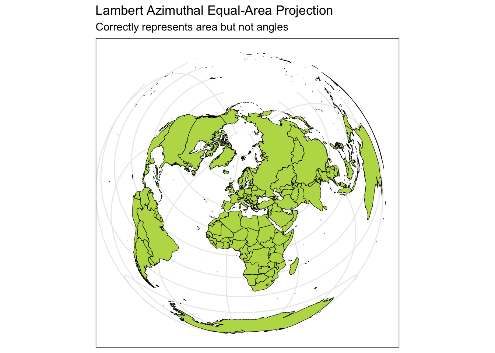
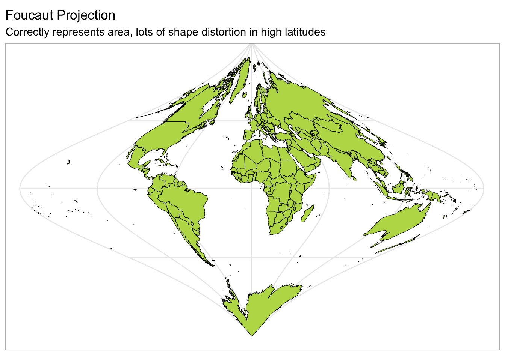
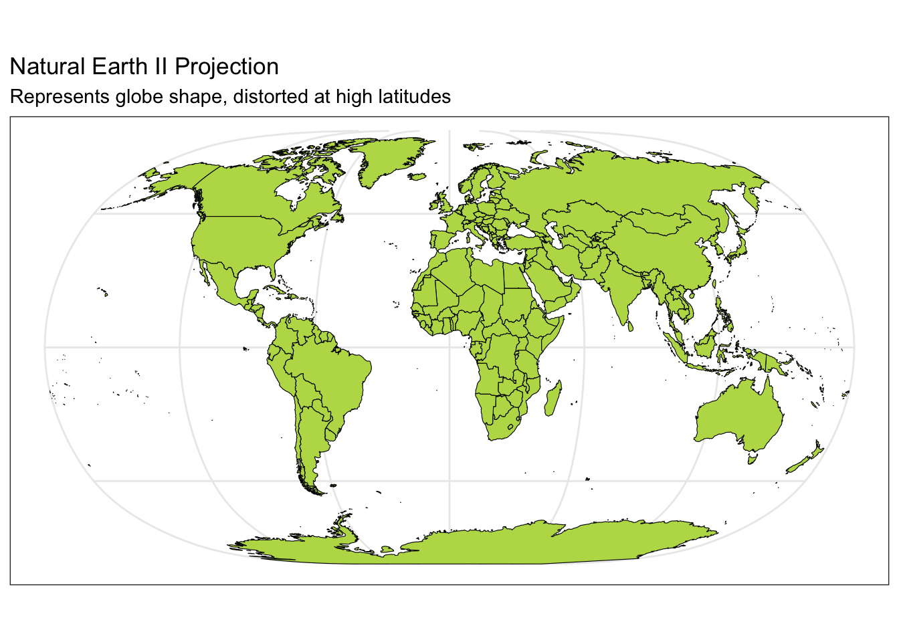
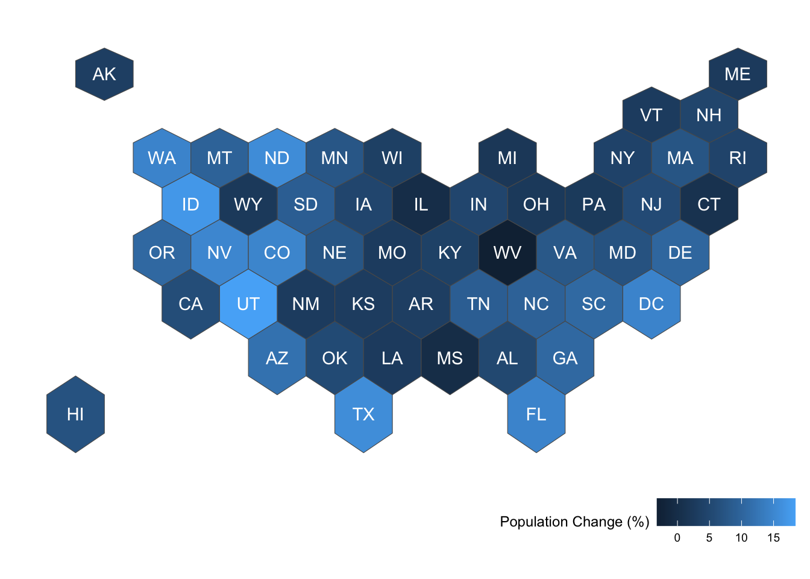
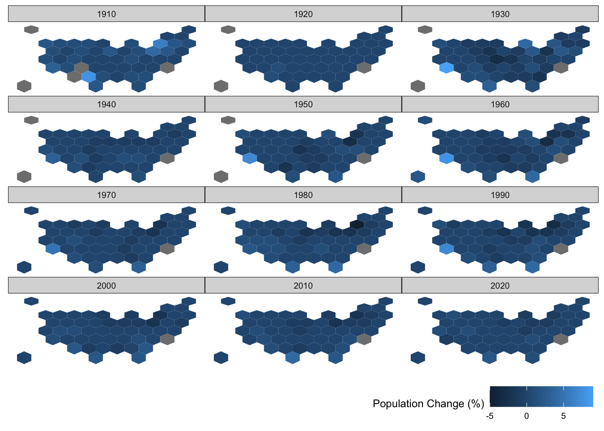
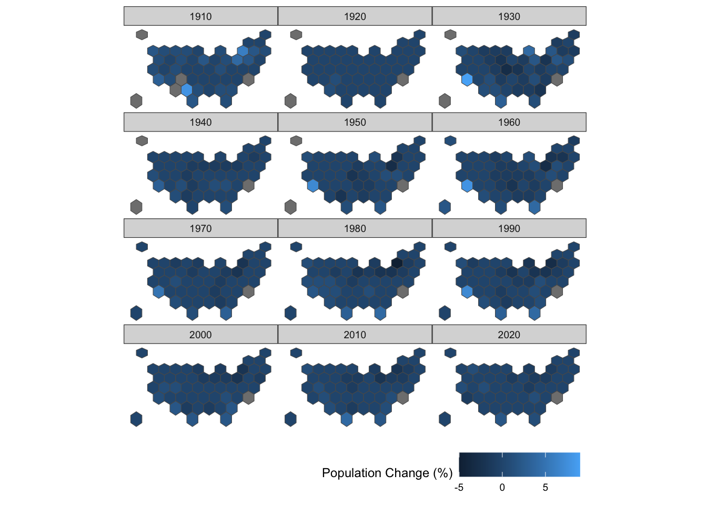

leaflet(data) %>%
addTiles() %>%
addMarkers()Advanced Spatial Visualizations
Learning goals
After this lesson, you should be able to:
- Understand the basics of a CRS (coordinate reference system)
- Understand and recognize different spatial file types and data types in R
- Implement some of the basic plotting with the
sfpackage - Understand foundational ideas in working with spatial data (aggregating spatial point data to a spatial region, joining spatial data sets)
Slides for today are available here. (For our main activity, we will be using the rest of the webpage below.)
You can download a template Quarto file to start from here. Put this file in an activities folder within a folder for this course.
Spatial Visualization Review
In STAT/COMP 112, you learned about basic spatial visualizations. To review,
- Background Maps in ggplot. The
ggmappackage includes tools to create a plot with a map background. In particular,get_stamenmap()accesses map image tiles from Stamen Maps (http://maps.stamen.com/) based on a provided bounding box (bbox) andggmap()can be used instead ofggplot()to use a background map image as the plotting frame.- http://Openstreetmap.org is an excellent tool to find longitude/latitude values for a desired bbox.
- Technical note: The bounding box of the ggmap object has a CRS of WGS84 (EPSG:4326), but the actual raster is in EPSG:3857. We’ll talk about CRS in this activity
- Contour Plots. The
geom_density_2d()function inggplot2package displays contours of intensity of points in a spatial area. - Choropleth. The
geom_map(data, map, aes(map_id))function inggplot2package displays choropleth maps (filled polygons/regions) based on a data frame of coordinates (long/x,lat/y,region/id) and an attribute data frame with properties for each region or id. - Leaflet. The
leafletpackage in R provides access to the Leaflet javascript library (https://leafletjs.com/) to create interactive maps. A basic map can be created with a data frame of coordinates and attributes (more advanced topics can be found at https://rstudio.github.io/leaflet/):
What’s next?
We used based mapping tools without thinking too much about the details of the maps. In order to create more advanced spatial visualizations, we need a foundation in spatial coordinate reference systems and how spatial data is often recorded and stored!
Coordinate Reference System
At the heart of every spatial visualization is a set of locations. One way to describe a location is in terms of coordinates and a coordinate reference system (CRS).
There are three main components to a CRS: ellipsoid, datum, and a projection. (The projection is a part of projected CRSs.)
Ellipsoid
While you might have learned that the Earth is a sphere, it is actually closer to an ellipsoid with a bulge at the equator. Additionally, the surface is irregular and not smooth. To define a CRS, we first need to choose a mathematical model represent a smooth approximation to the shape of the Earth. The common ellipsoid models are known as WGS84 and GRS80. See the illustration below of one ellipsoid model (shown in black) as compared to Earth’s true irregular surface (shown in red).

Datum
Each ellipsoid model has different ways to position it self relative to Earth depending on the center or origin. Each potential position and reference frame for representing the position of locations on Earth is called a datum.
For example, two different datum for the same ellipsoid model can provide a more accurate fit or approximation of the Earth’s surface depending on the region of interest (South America v. North America). For example, the NAD83 datum is a good fit for the GRS80 ellipsoid in North America, but SIRGAS2000 is a better fit for the GRS80 ellipsoid in South America. The illustration below shows one datum in which the center of the ellipsoid does not coincide with the center of Earth’s mass. With this position of the ellipsoid, we gain a better fit for the southern half of the Earth.

It is useful to know that the Global Positioning System (GPS) uses the WGS84 ellipsoid model and a datum by the same name, which provides an overall best fit of the Earth.
If you have longitude and latitude coordinates for a location, it is important to know what datum and ellipsoid were used to define those positions.
Note: In practice, the horizontal distance between WGS84 and NAD83 coordinates is about 3-4 feet in the US, which may not be significant for most applications.
Exercise 1
Go to https://epsg.io/. Search for a location important to you (state, country, etc.). Filter based on Datum (Geodetic) on the right. Click on one geodetic datum option for your region of interest. Make sure your location is listed under the “Area of use” attribute.
Provide the region of interest (e.g. United States), the full datum name (e.g. North American Datum 1983), the shorthand name (e.g. NAD83, EPSG: 6269), and the ellipsoid (e.g. GRS 1980).
Location:
Example Solution
Location 1: South Africa, Cape, EPSG:6222, Ellipsoid: Clarke 1880 (Arc)
Location 2: Thailand, Indian 1975, EPSG:6240, Ellipsoid: Everest 1830 (1937 Adjustment)
Location 3: Colombia, Marco Geocentrico Nacional de Referencia, EPSG:6686, Ellipsoid: GRS 1980
Exercise 2
Let’s now practice specifying coordinates in a CRS.
For geographic coordinate reference systems, the coordinates of locations are specified by latitude (degrees, minutes, and seconds north or south of the equator), longitude (degrees, minutes, and seconds west or east of a prime meridian), and sometimes height.
Use the “Get position on a map” feature of https://epsg.io/ to locate the Olin-Rice Science Center at Macalester. The two boxes at the top allow you to specify a longitude (left box) and latitude (right box) in degrees. Enter the following to focus OLRI:
Longitude: -93.168855
Latitude: 44.936611
For projected coordinate reference systems, the coordinates of locations are typically specified by easting (x) and northing (y).
Click the “Transform” button at the top to find the location of OLRI in northing and easting coordinates (in meters) for the CRS EPSG:26993.
Easting:
Northing:
Solution
Easting: 865601.0163401571
Northing: 315516.10931633075
Projection
Lastly, the Earth lives in a 3 dimensional (3D) world and most visualizations are on a 2 dimensional (2D) surface. We must choose a projection method to represent points, regions, and lines on Earth on a 2D map with distance units (typically meter, international foot, US survey foot). In that projection process, a 3D element will lose angle, area, and/or distance when projected onto a 2D surface, no matter which method is chosen.
For a good overview of common projection methods, see https://pubs.usgs.gov/gip/70047422/report.pdf.
One of the most commonly used projection is the Mercator projection which is a cylindrical map projection from the 1500’s. It became popular for navigation because it represented north as up and south as down everywhere and preserves local directions and shape. However, it inflates the size of regions far from the equator. Thus, Greenland, Antarctica, Canada, and Russia appear large relative to their actual land mass as compared to Central Africa. See the illustration below to compare the area/shape of the countries with the Mercator projection of the world (light blue) with the true areas/shapes (dark blue).

Below you can see four different world projections. Take note of what is lost in terms of angle, area, or distance in these projections.
world <- ne_countries(scale = "medium", returnclass = "sf")
# Basic Map w/ labels
ggplot(data = world) +
geom_sf(color = "black", fill = "#bada55") +
labs(x = "Longitude", y = "Latitude", title = "World Map - Mercator Projection", subtitle = paste0("(", length(unique(world$name)), " countries)")) +
theme_bw() 
ggplot(data = world) +
geom_sf(color = "black", fill = "#bada55") +
coord_sf(crs = "+proj=laea +lat_0=52 +lon_0=10 +x_0=4321000 +y_0=3210000 +ellps=GRS80 +units=m +no_defs") +
labs(title = "Lambert Azimuthal Equal-Area Projection", subtitle = "Correctly represents area but not angles") +
theme_bw()
ggplot(data = world) +
geom_sf(color = "black", fill = "#bada55") +
coord_sf(crs = "+proj=fouc") +
labs(title = "Foucaut Projection", subtitle = "Correctly represents area, lots of shape distortion in high latitudes") +
theme_bw() 
ggplot(data = world) +
geom_sf(color = "black", fill = "#bada55") +
coord_sf(crs = "+proj=natearth2") +
labs(title = "Natural Earth II Projection", subtitle = "Represents globe shape, distorted at high latitudes") +
theme_bw()
Exercise 3
Create a world map with a different projection (beyond the four above). Go to https://proj.org/en/9.2/operations/projections/index.html and find another projection. Look for the proj-string and copy that to the crs = argument in coord_sf().
ggplot(data = world) +
geom_sf(color = "black", fill = "#bada55") +
coord_sf(crs = "??") +
labs(title = "?? Projection", subtitle = "??") +
theme_bw() What is interesting, surprising, or different to you about the map of the Earth based on this projection?
ANSWER:
Talk with a neighbor about the projection they tried. What projection did they use and how is it different from the one you chose?
ANSWER:
Stop to Reflect
If coordinate reference systems are new to you, how do you feel about all of this new information? What are the most important points to take away? What are the documents and sites you can refer back to when you need more details?
When you learn about a new area of study, it can feel overwhelming. Pick out the 3-5 priority ideas to help you organize all of the details.
Spatial Data
With a CRS (including a projection method) to collect and record location data in terms of longitude or easting (x) and latitude or northing (y) coordinates, we can now consider common models for storing spatial data on the computer. There are two main data models: vector and raster.
Data Models
Vector
Vector data represents the world as a set of spatial geometries that are defined in terms of location coordinates (with a specified CRS) with non-spatial attributes or properties.
The three basic vector geometries are
- Points: Locations defined based on a (x, y) coordinates.
- Lines: A set of ordered points connected by straight lines.
- Polygons: A set of ordered points connected by straight lines, first and last point are the same.
For example, city locations can be represented with points, roads and rivers can be represented by lines, and geo-political boundaries and lakes can be represented by polygons.
Hundreds of file formats exist to store spatial vector data. A text file (such as .csv) can store the coordinates in two columns (x,y) in addition to a group id (needed for lines and polygons) plus attributes or properties in additional columns. Note that text files do not store the CRS. However, shapefiles (.shp) developed by ESRI is one of the most widely supported spatial vector file format (that includes the CRS). Additionally, GeoJSON (.geojson) and KML (.kml) are additional popular formats.
Exercise 4
To create maps, we’ll need to have access to some spatial data.
Go to the following websites and download the vector data files indicated. Put all of the downloaded files/folders in same folder as this Rmd file.
- URL: https://team.carto.com/u/andrew/tables/andrew.us_states_hexgrid/public/map
- Download File Type: GeoJSON
- Name of File:
us_states_hexgrid.geojson
- URL: https://www2.census.gov/programs-surveys/decennial/2020/data/apportionment/apportionment.csv
- Download File Type: csv
- Name of File:
apportionment.csv
- URL: https://gisdata.mn.gov/dataset/loc-pop-centers
- Download File Type: shapefile (.shp)
- Name of File:
shp_loc_pop_centers.zip(unzip this file to get a folder with the nameshp_loc_pop_centers)
- URL: https://gisdata.mn.gov/dataset/us-mn-state-metc-water-lakes-rivers
- Download File Type: shapefile (.shp)
- Name of File:
shp_water_lakes_rivers.zip(unzip this file to get a folder with the nameshp_water_lakes_rivers)
Raster
Raster data represents the world using a continuous grid of cells where each cell has a single value. These values could be continuous (e.g., elevation, precipitation) or categorical (e.g., land cover type, soil type).
Typically regular cells are square in shape but they can be rotated and sheared. Rectilinear and curvilinear shapes are also possible, depending on the spatial region of interest and CRS.

Be aware that high resolution raster data involves a large number of small cells. This can slow down the computations and visualizations.
Many raster file formats exist. One of the most popular is GeoTIFF (.tif or .tiff). More complex raster formats include NetCDF (.nc) and HDF (.hdf). To work with raster data in R, you’ll use the raster, terra, and the stars packages. If you are interested in learning more, check out https://r-spatial.github.io/stars/.
Working with Spatial Data in R
Read data into R
For each file format, we need to use a different function to read in the data. See the examples below for reading in GeoJSON, CSV, and shapefiles.
# Read in GeoJSON file
hex_spatial <- geojsonio::geojson_read("data/us_states_hexgrid.geojson", what = "sp")
# Read in CSV File
pop_growth <- readr::read_csv("data/apportionment.csv") %>% janitor::clean_names()
# Read in Shapefiles
mn_cities <- sf::read_sf("data/shp_loc_pop_centers") #shp file/folder
mn_water <- sf::read_sf("data/shp_water_lakes_rivers") #shp file/folderData classes in R
When data is read in, an R data object is created of a default class. Notice the classes of the R objects we read in. Also, notice that an object may have multiple classes, which indicate the type of structure it has and how functions may interact with the object.
class(hex_spatial)[1] "SpatialPolygonsDataFrame"
attr(,"package")
[1] "sp"class(pop_growth)[1] "spec_tbl_df" "tbl_df" "tbl" "data.frame" class(mn_cities)[1] "sf" "tbl_df" "tbl" "data.frame"class(mn_water)[1] "sf" "tbl_df" "tbl" "data.frame"Older R Spatial classes
In the sp package, there are many spatial classes that hold slightly different data. All Spatial* classes have a bounding box (bbox) and a CRS.
SpatialPoints,SpatialLines, andSpatialPolygonsprovide structure to hold the basic spatial geometries of points, lines, and polygons.Spatial*DataFrameextends the geometry classes to a data.frame-like object with non-spatial attribute data.
Exercise 5
We can look at the first bit of the hex_spatial object to get a sense for how information in the object is organized:
head(hex_spatial,1)An object of class "SpatialPolygonsDataFrame"
Slot "data":
cartodb_id created_at updated_at label bees iso3166_2
1 1219 2015-05-13 17:26:15 2015-10-05 11:00:16 Maine 60.5 ME
google_name
1 Maine (United States)
Slot "polygons":
[[1]]
An object of class "Polygons"
Slot "Polygons":
[[1]]
An object of class "Polygon"
Slot "labpt":
[1] -72.62574 53.45575
Slot "area":
[1] 15.28454
Slot "hole":
[1] FALSE
Slot "ringDir":
[1] 1
Slot "coords":
[,1] [,2]
[1,] -72.62574 55.31320
[2,] -69.90286 54.40843
[3,] -69.90286 52.53744
[4,] -72.62574 51.57081
[5,] -75.34861 52.53744
[6,] -75.34861 54.40843
[7,] -72.62574 55.31320
Slot "plotOrder":
[1] 1
Slot "labpt":
[1] -72.62574 53.45575
Slot "ID":
[1] "1"
Slot "area":
[1] 15.28454
Slot "plotOrder":
[1] 1
Slot "bbox":
min max
x -75.34861 -69.90286
y 51.57081 55.31320
Slot "proj4string":
Coordinate Reference System:
Deprecated Proj.4 representation: +proj=longlat +datum=WGS84 +no_defs
WKT2 2019 representation:
GEOGCRS["WGS 84",
DATUM["World Geodetic System 1984",
ELLIPSOID["WGS 84",6378137,298.257223563,
LENGTHUNIT["metre",1]]],
PRIMEM["Greenwich",0,
ANGLEUNIT["degree",0.0174532925199433]],
CS[ellipsoidal,2],
AXIS["geodetic latitude (Lat)",north,
ORDER[1],
ANGLEUNIT["degree",0.0174532925199433]],
AXIS["geodetic longitude (Lon)",east,
ORDER[2],
ANGLEUNIT["degree",0.0174532925199433]],
ID["EPSG",4326]] Based on this information, fill in the following:
- CRS:
- BBOX (extent):
- Geometry type:
Solution
- CRS: EPSG:4326 (+proj=longlat +datum=WGS84 +no_defs) (From
Slot "proj4string": Coordinate Reference System:) - BBOX: x -75.34861 -69.90; y 51.57 55.31 (From
Slot "bbox") - Geometry type: Polygons (Inferred from
An object of class "SpatialPolygonsDataFrame"andclass "Polygon")
Newer R Spatial classes
The community is moving away from using older sp classes to sf classes. It is useful for you to know that the older versions exist, but we will stick with the sf classes.
sfcobjects are modern, general versions of the spatial geometries from thesppackage with a bbox, CRS, and many geometries available.sfobjects aredata.frame-like objects with a geometry column of classsfc.
mn_citiesSimple feature collection with 1081 features and 8 fields
Geometry type: POINT
Dimension: XY
Bounding box: xmin: 190832.6 ymin: 4816672 xmax: 747463.4 ymax: 5468045
Projected CRS: NAD83 / UTM zone 15N
# A tibble: 1,081 × 9
GNIS Name CTU_Type County FIPS_Code Sym_Class Population Notes
<dbl> <chr> <chr> <chr> <chr> <chr> <dbl> <chr>
1 2393879 Ada City Norman Cou… 27107001… County S… 1681 <NA>
2 2393881 Adams City Mower Coun… 27099001… Small Ci… 742 <NA>
3 2393884 Adrian City Nobles Cou… 27105002… Small Ci… 1278 <NA>
4 2393887 Afton City Washington… 27163003… Small Ci… 2932 <NA>
5 2393894 Aitkin City Aitkin Cou… 27001004… County S… 2279 <NA>
6 2393895 Akeley City Hubbard Co… 27057004… Small Ci… 397 <NA>
7 2393898 Albany City Stearns Co… 27145006… Small Ci… 2618 <NA>
8 2393902 Albert Lea City Freeborn C… 27047006… County S… 17843 <NA>
9 2393903 Alberta City Stevens Co… 27149006… Small Ci… 122 <NA>
10 2393904 Albertville City Wright Cou… 27171007… Small Ci… 7226 <NA>
# ℹ 1,071 more rows
# ℹ 1 more variable: geometry <POINT [m]>Exercise 6
Based on the summary of mn_cities, what are the following:
- CRS:
- BBOX:
- Geometry type:
Solution
- CRS: NAD83 / UTM zone 15N
- BBOX: xmin: 190832.6 ymin: 4816672 xmax: 747463.4 ymax: 5468045
- Geometry type: Points
Putting spatial data into a data.frame with fortify()
The data.frame and tbl (tibble) classes are standard data formats that are not specific to spatial data but are really nice for working with because of tidyverse. Our pop_growth data doesn’t include any coordinate information, so it can be stored simply as a data.frame (tbl, tbl_df, and spec_tbl_df are all subclasses of data.frame).
You may come across data.frames that contain spatial coordinate information, so let’s see what that might look like. We can fortify() our sp object (hex_spatial) to make it a data frame.
# Convert Spatial*DataFrame to Data Frame
hex_spatial_df <- fortify(hex_spatial)
class(hex_spatial_df)[1] "data.frame"Exercise 7
Whenever we come across a new function (fortify), it is helpful to explore the structure of information contained within the object that it creates.
What are the variables in hex_spatial_df? Compare the first seven rows with the first spatial polygon of hex_spatial. Using this comparison describe the meaning of the variables in hex_spatial_df. (piece, id, and group are trickier. We’ll talk about this together.)
# Display the first 7 rows of hex_spatial_df
head(hex_spatial_df,7) long lat order hole piece id group
1 -72.62574 55.31320 1 FALSE 1 1 1.1
2 -69.90286 54.40843 2 FALSE 1 1 1.1
3 -69.90286 52.53744 3 FALSE 1 1 1.1
4 -72.62574 51.57081 4 FALSE 1 1 1.1
5 -75.34861 52.53744 5 FALSE 1 1 1.1
6 -75.34861 54.40843 6 FALSE 1 1 1.1
7 -72.62574 55.31320 7 FALSE 1 1 1.1# Look at the first polygon in the hex_spatial object (Maine)
hex_spatial@polygons[[1]]An object of class "Polygons"
Slot "Polygons":
[[1]]
An object of class "Polygon"
Slot "labpt":
[1] -72.62574 53.45575
Slot "area":
[1] 15.28454
Slot "hole":
[1] FALSE
Slot "ringDir":
[1] 1
Slot "coords":
[,1] [,2]
[1,] -72.62574 55.31320
[2,] -69.90286 54.40843
[3,] -69.90286 52.53744
[4,] -72.62574 51.57081
[5,] -75.34861 52.53744
[6,] -75.34861 54.40843
[7,] -72.62574 55.31320
Slot "plotOrder":
[1] 1
Slot "labpt":
[1] -72.62574 53.45575
Slot "ID":
[1] "1"
Slot "area":
[1] 15.28454ANSWER:
Solution
Variables: long, lat, order, hole, piece, id, group
longandlatprovide the x and y coordinates of the polygon for a particlar region or areaid.
The
orderis the order in which you connect the coordinate points to make a polygon.
holeindicates whether or not it should be included or excluded in the region as a hole.
pieceindicates the number of the polygon for an individual area
idis a unique identifier for each polygon and allows linking to the original spatial object (hex_spatial). (There is aSlot "ID"part of the object.)
groupindicates which pieces belong to the same group or should be plotted together as a single entity. This can be useful when you want to apply different aesthetics (e.g., colors, linetypes) to different groups of polygons within your spatial object. It helps in specifying how to group and style the different pieces when creating plots.
Converting between data classes
Sometimes functions for working with spatial data will only work on an object that is of a particular class (e.g., only works on sf objects). If we have an object of a different class, we need to know how to convert it to the right class.
We can convert objects between these data classes with the following functions:
fortify(x):spobject x todata.framest_as_sf(x):spobject x tosfst_as_sf(x, coords = c("long", "lat")):data.framex tosfas points- To convert a
data.framewith columns oflong,lat, andgroupcontaining polygon geometry information, you can use:
st_as_sf(x, coords = c("long", "lat")) %>%
group_by(group) %>%
summarise(geometry = st_combine(geometry)) %>%
st_cast("POLYGON")(Note: We won’t often want to convert our data to a Spatial* class from sp package, so we’ll exclude that in this activity.)
Exercise 8
Convert the hex_spatial data to an sf object called hex_spatial_sf. Complete these two ways
hex_spatialdirectly tohex_spatial_sfANDhex_spatial_dftohex_spatial_sf.
# Convert to SF from hex_spatial_df
hex_spatial_sf <- hex_spatial_df %>% ???
# Convert to SF from hex_spatial
hex_spatial_sf <- hex_spatial %>% ???Solution
# Convert to SF from hex_spatial_df
hex_spatial_sf <- hex_spatial_df %>%
st_as_sf(coords = c("long", "lat")) %>%
group_by(group) %>%
summarise(geometry = st_combine(geometry)) %>%
st_cast("POLYGON")
# Convert to SF from hex_spatial
hex_spatial_sf <- hex_spatial %>% st_as_sf()
Stop to Reflect
We’ve now talked about CRSs and how spatial data is stored in R. Thinking on the lesson so far as a whole…
- What’s making sense? What’s not?
- What would help connect everything we’ve talked about?
Record observations in your Process and Reflection Log.
Share your observations with your partner. Together try to figure out what themes emerge in what you’re still working on. Then try to come up with strategies that can help you move forward.
Example themes: What is the “why” behind this? What is the full picture/pipeline/how this is used in practice?
Example strategies: writing condensed summaries, drawing concept maps
Spatial Maps
Hexbin Choropleth
Data Source: https://r-graph-gallery.com/328-hexbin-map-of-the-usa.html
In this example, we’ll create an alternative choropleth map. Instead of using the actual geo-political boundaries, we will use hexagons to represent the U.S. states and maintain their relative directional position to each together. This approach results in each state having the same area in the graphic so that large regions don’t dominate the visual story.
Exercise 9
Describe what the following code chunks are doing. Be sure to consider the class of the data object, what the data object looks like to start, and what it looks like at the end of the chunk.
# Chunk A
hex_spatial_df <- hex_spatial_df %>%
left_join(
data.frame(id = as.character(1:nrow(hex_spatial)) ,
name = str_replace(hex_spatial$google_name,' \\(United States\\)',''),
abbr = hex_spatial$iso3166_2))ANSWER (Chunk A):
Solution
# Chunk A
head(hex_spatial_df) # Start with data frame of 357 rows and 7 columns long lat order hole piece id group
1 -72.62574 55.31320 1 FALSE 1 1 1.1
2 -69.90286 54.40843 2 FALSE 1 1 1.1
3 -69.90286 52.53744 3 FALSE 1 1 1.1
4 -72.62574 51.57081 4 FALSE 1 1 1.1
5 -75.34861 52.53744 5 FALSE 1 1 1.1
6 -75.34861 54.40843 6 FALSE 1 1 1.1hex_spatial_df <- hex_spatial_df %>%
left_join( # Left join, a mutating join, a dataset with information from hex_spatial
data.frame(id = as.character(1:nrow(hex_spatial)) , # Create a data frame with variables id (1,2,3...), name (defined as the google_name from hex_spatial after removing "(United States)"), and abbr (the state abbreviation in hex_spatial as variable iso3166_2)
name = str_replace(hex_spatial$google_name,' \\(United States\\)',''),
abbr = hex_spatial$iso3166_2))
head(hex_spatial_df) # End with data frame of 357 rows and 9 columns (new: name and abbr) long lat order hole piece id group name abbr
1 -72.62574 55.31320 1 FALSE 1 1 1.1 Maine ME
2 -69.90286 54.40843 2 FALSE 1 1 1.1 Maine ME
3 -69.90286 52.53744 3 FALSE 1 1 1.1 Maine ME
4 -72.62574 51.57081 4 FALSE 1 1 1.1 Maine ME
5 -75.34861 52.53744 5 FALSE 1 1 1.1 Maine ME
6 -75.34861 54.40843 6 FALSE 1 1 1.1 Maine ME# Chunk B
hex_spatial_sf <- hex_spatial_sf %>%
mutate(
name = str_replace(google_name,' \\(United States\\)',''),
abbr = iso3166_2
)ANSWER (Chunk B):
Solution
# Chunk B
head(hex_spatial_sf) # Start with sf object with 51 regions and 7 variables/featuresSimple feature collection with 6 features and 7 fields
Geometry type: POLYGON
Dimension: XY
Bounding box: xmin: -113.4688 ymin: 30.53798 xmax: -69.90286 ymax: 55.3132
Geodetic CRS: WGS 84
cartodb_id created_at updated_at label bees iso3166_2
1 1219 2015-05-13 17:26:15 2015-10-05 11:00:16 Maine 60.5 ME
2 1217 2015-05-13 17:24:35 2015-10-05 11:00:16 R.I. 47.8 RI
3 1218 2015-05-13 17:25:00 2015-10-05 11:00:16 Vt. 33.9 VT
4 231 2015-05-13 17:02:22 2015-10-05 11:00:16 Okla. 63.4 OK
5 244 2015-05-13 17:02:22 2015-10-05 11:00:16 N.C. 41.5 NC
6 259 2015-05-13 17:02:22 2015-10-05 11:00:16 Va. 45.6 VA
google_name geometry
1 Maine (United States) POLYGON ((-72.62574 55.3132...
2 Rhode Island (United States) POLYGON ((-72.62574 49.5743...
3 Vermont (United States) POLYGON ((-80.79436 52.5374...
4 Oklahoma (United States) POLYGON ((-110.746 35.79821...
5 North Carolina (United States) POLYGON ((-91.68585 39.5301...
6 Virginia (United States) POLYGON ((-88.96298 43.0717...hex_spatial_sf <- hex_spatial_sf %>% # Create new variables: name (defined as the google_name after removing "(United States)"), and abbr (the state abbreviation from variable iso3166_2)
mutate(
name = str_replace(google_name,' \\(United States\\)',''),
abbr = iso3166_2
)
head(hex_spatial_sf) # Ends with sf object with 51 regions and 9 variables/featuresSimple feature collection with 6 features and 9 fields
Geometry type: POLYGON
Dimension: XY
Bounding box: xmin: -113.4688 ymin: 30.53798 xmax: -69.90286 ymax: 55.3132
Geodetic CRS: WGS 84
cartodb_id created_at updated_at label bees iso3166_2
1 1219 2015-05-13 17:26:15 2015-10-05 11:00:16 Maine 60.5 ME
2 1217 2015-05-13 17:24:35 2015-10-05 11:00:16 R.I. 47.8 RI
3 1218 2015-05-13 17:25:00 2015-10-05 11:00:16 Vt. 33.9 VT
4 231 2015-05-13 17:02:22 2015-10-05 11:00:16 Okla. 63.4 OK
5 244 2015-05-13 17:02:22 2015-10-05 11:00:16 N.C. 41.5 NC
6 259 2015-05-13 17:02:22 2015-10-05 11:00:16 Va. 45.6 VA
google_name geometry name
1 Maine (United States) POLYGON ((-72.62574 55.3132... Maine
2 Rhode Island (United States) POLYGON ((-72.62574 49.5743... Rhode Island
3 Vermont (United States) POLYGON ((-80.79436 52.5374... Vermont
4 Oklahoma (United States) POLYGON ((-110.746 35.79821... Oklahoma
5 North Carolina (United States) POLYGON ((-91.68585 39.5301... North Carolina
6 Virginia (United States) POLYGON ((-88.96298 43.0717... Virginia
abbr
1 ME
2 RI
3 VT
4 OK
5 NC
6 VA# Chunk C
hex_growth_df <- left_join(hex_spatial_df, pop_growth, by = 'name')
hex_growth_sf <- left_join(hex_spatial_sf, pop_growth, by = 'name')ANSWER (Chunk C):
Solution
# Chunk C
hex_growth_df <- left_join(hex_spatial_df, pop_growth, by = 'name') # Add in pop_growth variables to data frame using left_join; in the process duplicate the geometry for each region for each year
head(hex_growth_df) long lat order hole piece id group name abbr geography_type year
1 -72.62574 55.3132 1 FALSE 1 1 1.1 Maine ME State 1910
2 -72.62574 55.3132 1 FALSE 1 1 1.1 Maine ME State 1920
3 -72.62574 55.3132 1 FALSE 1 1 1.1 Maine ME State 1930
4 -72.62574 55.3132 1 FALSE 1 1 1.1 Maine ME State 1940
5 -72.62574 55.3132 1 FALSE 1 1 1.1 Maine ME State 1950
6 -72.62574 55.3132 1 FALSE 1 1 1.1 Maine ME State 1960
resident_population percent_change_in_resident_population
1 742371 6.9
2 768014 3.5
3 797423 3.8
4 847226 6.2
5 913774 7.9
6 969265 6.1
resident_population_density resident_population_density_rank
1 24.1 33
2 24.9 34
3 25.9 36
4 27.5 36
5 29.6 37
6 31.4 38
number_of_representatives change_in_number_of_representatives
1 4 0
2 4 0
3 3 -1
4 3 0
5 3 0
6 2 -1
average_apportionment_population_per_representative
1 185593
2 192004
3 265806
4 282409
5 304591
6 484633dim(hex_growth_df) # end with data frame of 4284 rows and 18 variables[1] 4284 18hex_growth_sf <- left_join(hex_spatial_sf, pop_growth, by = 'name') # add in pop_growth variables to sf object using left join; in the process duplicate the geometry for each region for each year
head(hex_growth_sf)Simple feature collection with 6 features and 18 fields
Geometry type: POLYGON
Dimension: XY
Bounding box: xmin: -75.34861 ymin: 51.57081 xmax: -69.90286 ymax: 55.3132
Geodetic CRS: WGS 84
cartodb_id created_at updated_at label bees iso3166_2
1 1219 2015-05-13 17:26:15 2015-10-05 11:00:16 Maine 60.5 ME
2 1219 2015-05-13 17:26:15 2015-10-05 11:00:16 Maine 60.5 ME
3 1219 2015-05-13 17:26:15 2015-10-05 11:00:16 Maine 60.5 ME
4 1219 2015-05-13 17:26:15 2015-10-05 11:00:16 Maine 60.5 ME
5 1219 2015-05-13 17:26:15 2015-10-05 11:00:16 Maine 60.5 ME
6 1219 2015-05-13 17:26:15 2015-10-05 11:00:16 Maine 60.5 ME
google_name name abbr geography_type year resident_population
1 Maine (United States) Maine ME State 1910 742371
2 Maine (United States) Maine ME State 1920 768014
3 Maine (United States) Maine ME State 1930 797423
4 Maine (United States) Maine ME State 1940 847226
5 Maine (United States) Maine ME State 1950 913774
6 Maine (United States) Maine ME State 1960 969265
percent_change_in_resident_population resident_population_density
1 6.9 24.1
2 3.5 24.9
3 3.8 25.9
4 6.2 27.5
5 7.9 29.6
6 6.1 31.4
resident_population_density_rank number_of_representatives
1 33 4
2 34 4
3 36 3
4 36 3
5 37 3
6 38 2
change_in_number_of_representatives
1 0
2 0
3 -1
4 0
5 0
6 -1
average_apportionment_population_per_representative
1 185593
2 192004
3 265806
4 282409
5 304591
6 484633
geometry
1 POLYGON ((-72.62574 55.3132...
2 POLYGON ((-72.62574 55.3132...
3 POLYGON ((-72.62574 55.3132...
4 POLYGON ((-72.62574 55.3132...
5 POLYGON ((-72.62574 55.3132...
6 POLYGON ((-72.62574 55.3132...dim(hex_growth_sf) #end with sf object of 612 region/year combinations and 19 variables[1] 612 19# Chunk D
centers <- data.frame(
rgeos::gCentroid(hex_spatial,byid = TRUE),
abbr = hex_spatial$iso3166_2
)
hex_growth_df %>%
filter(year == 2020) %>%
ggplot(aes(x = long, y = lat)) +
geom_polygon(aes(group = group, fill = percent_change_in_resident_population)) +
geom_text(data = centers, aes( x = x, y = y, label = abbr), color = 'white') +
labs(fill = 'Population Change (%)') +
ggthemes::theme_map() + theme(legend.position = 'bottom', legend.justification = 'right')ANSWER (Chunk D):
Solution
# Chunk D
centers <- data.frame(
rgeos::gCentroid(hex_spatial,byid = TRUE), # Create data frame of the center of each region and the state abbreviation
abbr = hex_spatial$iso3166_2
)
hex_growth_df %>%
filter(year == 2020) %>% # focus only on the data from 2020
ggplot(aes(x = long, y = lat)) + # create frame of longitude and latitude
geom_polygon(aes(group = group, fill = percent_change_in_resident_population)) + # add hex polygons defined by x and y but grouped according to group and color filled by the percent_change in resident population
geom_text(data = centers, aes( x = x, y = y, label = abbr), color = 'white') + # add text at the centers of the polygons and add text labels from the abbr variable in the centers data we created
labs(fill = 'Population Change (%)') + # change legend label
ggthemes::theme_map() + theme(legend.position = 'bottom', legend.justification = 'right') # remove the background theme and move the legend to the bottom right
# Chunk E
hex_growth_sf %>%
filter(year == 2020) %>%
ggplot() +
geom_sf(aes(fill = percent_change_in_resident_population)) +
geom_sf_text( aes(label = abbr), color = 'white') +
labs(fill = 'Population Change (%)') +
ggthemes::theme_map() + theme(legend.position = 'bottom', legend.justification = 'right')ANSWER (Chunk E):
Solution
# Chunk E
hex_growth_sf %>% # start with sf object
filter(year == 2020) %>% #filter to focus on data from 2020
ggplot() +
geom_sf(aes(fill = percent_change_in_resident_population)) + # plot the sf geometry (polygons) and fill color according to percent change in population
geom_sf_text( aes(label = abbr), color = 'white') + # add text labels to the sf geometry regions using abbr for the text
labs(fill = 'Population Change (%)') + # Change legend label
ggthemes::theme_map() + theme(legend.position = 'bottom', legend.justification = 'right') # remove the background theme and move the legend to the bottom right 
Exercise 10
Using the hexbin spatial boundaries and the pop_growth data, make the following updates to the choropleth graphic:
- Change the outcome variable (different year or variable).
- Change the fill scale to be more meaningful and effective.
- Make one more update beyond the fill color to improve the effectiveness of the graphic.
Make the graphic twice, once with geom_polygon() and once with geom_sf().
Example Solution
hex_growth_df %>%
ggplot(aes(x = long, y = lat)) + # create frame of longitude and latitude
geom_polygon(aes(group = group, fill = change_in_number_of_representatives)) + # add hex polygons defined by x and y but grouped according to group and color by change in number of representatives
# geom_text(data = centers, aes( x = x, y = y, label = abbr), color = 'white') + # add text at the centers of the polygons and add text labels from the abbr variable in the centers data we created
facet_wrap(~ year, ncol = 3) +
labs(fill = 'Population Change (%)') + # change legend label
ggthemes::theme_map() + theme(legend.position = 'bottom', legend.justification = 'right') # remove the background theme and move the legend to the bottom right
hex_growth_sf %>% # start with sf object
ggplot() +
geom_sf(aes(fill = change_in_number_of_representatives)) + # plot the sf geometry (polygons) and fill color according to change in number of representatives
# geom_sf_text( aes(label = abbr), color = 'white') + # add text labels to the sf geometry regions using abbr for the text
facet_wrap(~ year, ncol = 3) +
labs(fill = 'Population Change (%)') + # Change legend label
ggthemes::theme_map() + theme(legend.position = 'bottom', legend.justification = 'right') # remove the background theme and move the legend to the bottom right
Bonus Challenge
Find external state-level data online, read it into R, join it, and create a U.S. state hexbin map displaying that new state-level outcome.
MN City/County example
Stop to Reflect
When looking through code examples, notice familiar functions and syntax patterns. Also, notice new functions and try figure out what they are doing.
Add comments to the code so that you can come back to the examples when you need them.
Unifying CRSs across different spatial datasets
To demonstrate other spatial geometries beyond polygons (the hexagons in the last example were spatial polygons), we’ll walk through create a map of MN with different layers of information (city point locations, county polygon boundaries, rivers as lines and polygons, and a raster elevation map). To add all of this information on one map, we need to ensure that the CRS is the same for all spatial datasets.
# Check CRS
st_crs(mn_cities)Coordinate Reference System:
User input: NAD83 / UTM zone 15N
wkt:
PROJCRS["NAD83 / UTM zone 15N",
BASEGEOGCRS["NAD83",
DATUM["North American Datum 1983",
ELLIPSOID["GRS 1980",6378137,298.257222101,
LENGTHUNIT["metre",1]]],
PRIMEM["Greenwich",0,
ANGLEUNIT["degree",0.0174532925199433]],
ID["EPSG",4269]],
CONVERSION["UTM zone 15N",
METHOD["Transverse Mercator",
ID["EPSG",9807]],
PARAMETER["Latitude of natural origin",0,
ANGLEUNIT["Degree",0.0174532925199433],
ID["EPSG",8801]],
PARAMETER["Longitude of natural origin",-93,
ANGLEUNIT["Degree",0.0174532925199433],
ID["EPSG",8802]],
PARAMETER["Scale factor at natural origin",0.9996,
SCALEUNIT["unity",1],
ID["EPSG",8805]],
PARAMETER["False easting",500000,
LENGTHUNIT["metre",1],
ID["EPSG",8806]],
PARAMETER["False northing",0,
LENGTHUNIT["metre",1],
ID["EPSG",8807]]],
CS[Cartesian,2],
AXIS["(E)",east,
ORDER[1],
LENGTHUNIT["metre",1]],
AXIS["(N)",north,
ORDER[2],
LENGTHUNIT["metre",1]],
ID["EPSG",26915]]# Check CRS
st_crs(mn_water)Coordinate Reference System:
User input: NAD83 / UTM zone 15N
wkt:
PROJCRS["NAD83 / UTM zone 15N",
BASEGEOGCRS["NAD83",
DATUM["North American Datum 1983",
ELLIPSOID["GRS 1980",6378137,298.257222101,
LENGTHUNIT["metre",1]]],
PRIMEM["Greenwich",0,
ANGLEUNIT["degree",0.0174532925199433]],
ID["EPSG",4269]],
CONVERSION["UTM zone 15N",
METHOD["Transverse Mercator",
ID["EPSG",9807]],
PARAMETER["Latitude of natural origin",0,
ANGLEUNIT["Degree",0.0174532925199433],
ID["EPSG",8801]],
PARAMETER["Longitude of natural origin",-93,
ANGLEUNIT["Degree",0.0174532925199433],
ID["EPSG",8802]],
PARAMETER["Scale factor at natural origin",0.9996,
SCALEUNIT["unity",1],
ID["EPSG",8805]],
PARAMETER["False easting",500000,
LENGTHUNIT["metre",1],
ID["EPSG",8806]],
PARAMETER["False northing",0,
LENGTHUNIT["metre",1],
ID["EPSG",8807]]],
CS[Cartesian,2],
AXIS["(E)",east,
ORDER[1],
LENGTHUNIT["metre",1]],
AXIS["(N)",north,
ORDER[2],
LENGTHUNIT["metre",1]],
ID["EPSG",26915]]# (They're both NAD83 / UTM zone 15N but we'll transform anyway)
# Transform CRS of water to the same of the cities
mn_water <- mn_water %>%
st_transform(crs = st_crs(mn_cities))# Load country boundaries data as sf object
mn_counties <- us_counties(resolution = "high", states = "Minnesota")
# Remove duplicate column names
names_counties <- names(mn_counties)
names(mn_counties)[names_counties == 'state_name'] <- c("state_name1", "state_name2")
# Check CRS
st_crs(mn_counties)Coordinate Reference System:
User input: EPSG:4326
wkt:
GEOGCRS["WGS 84",
DATUM["World Geodetic System 1984",
ELLIPSOID["WGS 84",6378137,298.257223563,
LENGTHUNIT["metre",1]]],
PRIMEM["Greenwich",0,
ANGLEUNIT["degree",0.0174532925199433]],
CS[ellipsoidal,2],
AXIS["geodetic latitude (Lat)",north,
ORDER[1],
ANGLEUNIT["degree",0.0174532925199433]],
AXIS["geodetic longitude (Lon)",east,
ORDER[2],
ANGLEUNIT["degree",0.0174532925199433]],
USAGE[
SCOPE["Horizontal component of 3D system."],
AREA["World."],
BBOX[-90,-180,90,180]],
ID["EPSG",4326]]# (They're different!)
# Transform the CRS of county data to the more local CRS of the cities
mn_counties <- mn_counties %>%
st_transform(crs = st_crs(mn_cities))
st_crs(mn_counties)Coordinate Reference System:
User input: NAD83 / UTM zone 15N
wkt:
PROJCRS["NAD83 / UTM zone 15N",
BASEGEOGCRS["NAD83",
DATUM["North American Datum 1983",
ELLIPSOID["GRS 1980",6378137,298.257222101,
LENGTHUNIT["metre",1]]],
PRIMEM["Greenwich",0,
ANGLEUNIT["degree",0.0174532925199433]],
ID["EPSG",4269]],
CONVERSION["UTM zone 15N",
METHOD["Transverse Mercator",
ID["EPSG",9807]],
PARAMETER["Latitude of natural origin",0,
ANGLEUNIT["Degree",0.0174532925199433],
ID["EPSG",8801]],
PARAMETER["Longitude of natural origin",-93,
ANGLEUNIT["Degree",0.0174532925199433],
ID["EPSG",8802]],
PARAMETER["Scale factor at natural origin",0.9996,
SCALEUNIT["unity",1],
ID["EPSG",8805]],
PARAMETER["False easting",500000,
LENGTHUNIT["metre",1],
ID["EPSG",8806]],
PARAMETER["False northing",0,
LENGTHUNIT["metre",1],
ID["EPSG",8807]]],
CS[Cartesian,2],
AXIS["(E)",east,
ORDER[1],
LENGTHUNIT["metre",1]],
AXIS["(N)",north,
ORDER[2],
LENGTHUNIT["metre",1]],
ID["EPSG",26915]]Initial map: counties and cities
ggplot() + # plot frame
geom_sf(data = mn_counties, fill = NA) + # county boundary layer
geom_sf(data = mn_cities, size = 0.5) + # city point layer
ggthemes::theme_map()
ggplot() +
geom_sf(data = mn_counties, fill = "wheat", color = "tan") +
geom_sf(data = mn_cities %>% filter(Population >= 10000), mapping = aes(color = Population, size = Population), alpha = 0.8)+ #cities layer
scale_color_viridis_c() + # continuous (gradient) color scale
labs(title = "Minnesota Cities with Population >= 10,000") +
ggthemes::theme_map() + theme(legend.position = "bottom") #move legend
Updated map: counties and cities plus elevation
elevation <- elevatr::get_elev_raster(mn_counties, z = 5, clip = 'bbox')
raster::crs(elevation) <- sf::st_crs(mn_counties)
# Convert to Data Frame for plotting
elev_df <- elevation %>% terra::as.data.frame(xy = TRUE)
names(elev_df) <-c('x','y','value')
ggplot() +
geom_raster(data = elev_df, aes(x = x,y = y,fill = value)) + # adding the elevation as first (bottom) layer
geom_sf(data = mn_counties, fill = NA, color = "black") +
geom_sf(data = mn_cities %>% filter(Population >= 10000), mapping = aes(color = Population,size = Population), alpha = 0.8)+ #cities layer
scale_color_viridis_c() + #continuous (gradient) color scale
scale_fill_gradient(low = 'darkgreen',high = 'white', guide = FALSE) +
labs(title = "Minnesota Cities with Population >= 10,000") +
ggthemes::theme_map() + theme(legend.position = "bottom") #move legendUpdated map: zoom in to Twin Cities
seven_countyarea <- st_bbox(mn_counties %>% filter(name %in% c("Anoka", "Hennepin", "Ramsey", "Dakota", "Carver", "Washington", "Scott")))
elevation <- elevatr::get_elev_raster(mn_counties %>% st_crop(seven_countyarea), z = 9, clip = 'bbox')
raster::crs(elevation) <- sf::st_crs(mn_counties)
# Convert to data frame for plotting
elev_df <- elevation %>% terra::as.data.frame(xy = TRUE)
names(elev_df) <-c('x','y','value')
ggplot() +
geom_raster(data = elev_df, aes(x = x,y = y,fill = value)) +
geom_sf(data = mn_counties, fill = NA, color = "black") + # county boundary layer
geom_sf(data = mn_water, fill = 'lightsteelblue1',color = 'lightsteelblue1') + # added a river/lake layer
geom_sf(data = mn_cities %>% filter(Population >= 10000), mapping = aes(color = Population,size = Population)) + # cities layer
coord_sf(xlim = seven_countyarea[c(1,3)], ylim = seven_countyarea[c(2,4)]) + # crop map to coordinates of seven county area
scale_color_viridis_c(option = 'magma') + # continuous (gradient) color scale
scale_fill_gradient(low = 'darkgreen',high = 'white') + # continuous (gradient) fill scale
labs(title = "Twin Cities with Population >= 10,000") +
ggthemes::theme_map() + theme(legend.position = "none") # remove legendTwin Cities Leaflet
Below we show how to make the MN counties map in the leaflet package.
library(leaflet)
mn_counties_leaf <- mn_counties %>% st_transform(4326) # Leaflet expects this CRS for vectors
mn_cities_leaf <- mn_cities %>% st_transform(4326) # Leaflet expects this CRS for vectors
Cities_per_County <- st_join(mn_cities_leaf, mn_counties_leaf) %>%
st_drop_geometry() %>% #removes geometry - makes the following calculation more efficient
count(name)
mn_counties_leaf %>%
filter(name %in% c("Anoka", "Hennepin", "Ramsey", "Dakota", "Carver", "Washington", "Scott")) %>%
left_join(Cities_per_County) %>%
leaflet() %>%
addProviderTiles("CartoDB.Positron") %>%
addPolygons(color = "#444444", weight = 1, smoothFactor = 0.5,
opacity = 1.0, fillOpacity = 0.5, fillColor = ~colorQuantile("YlOrRd", n)(n), highlightOptions = highlightOptions(color = "white", weight = 2,
bringToFront = TRUE)) %>%
addCircles(data = mn_cities_leaf %>% filter(County %in% paste(c("Anoka", "Hennepin", "Ramsey", "Dakota", "Carver", "Washington", "Scott"),'County')), color = "#444444")Open-ended Exercise (Homework)
The following exercises will use census tract tidycensus data for Ramsey and Hennepin county and Crash.csv (2019-2022) from the pedestrian/bike crash database for St. Paul within Ramsey county in the Twin Cities. We provide several variables that you can choose from in order to create maps that best fit your interest.
Load the data with the following code:
census2020 <- tidycensus::get_acs(year = 2020, state = "MN", geography = "tract", variables = c(
"B01003_001", "B19013_001", "B23006_023", "B25058_001", "B25107_001", "B25003_001", "B25003_002", "B25003_003", "B25077_001"), output = 'wide', geometry = TRUE) %>%
filter(word(NAME, 4) %in% c("Ramsey","Hennepin"))%>%
mutate(tract = word(NAME, 3),
tract = str_remove(tract, ","),
county = word(NAME, 4)) %>%
select(-NAME) %>%
rename("population" = "B01003_001E",
"medianIncome" = "B19013_001E",
"bachelors" = "B23006_023E",
"medContractRent" = "B25058_001E",
"tenureTotal" = "B25003_001E",
"tenureOwned" = "B25003_002E",
"tenureRented" = "B25003_003E",
"medianHomeValue"= "B25077_001E") %>%
select(-contains("_"))
crashes <- read_csv("https://lmyint.github.io/212_fall_2023/data/Crash.csv") %>%
filter(!is.na(Latitude), !is.na(Longitude))Exercise: Joining and aggregation
Create a map of crashes per census tract in Ramsey county.
First, transform the crashes data frame to a sf object have a point geometry using the code below.
crashes <- st_as_sf(crashes, coords = c("Longitude", "Latitude"), crs = "NAD83")Check the CRS are the same for census2020 and crashes using st_crs() and transform if needed.
# code hereJoin the crashes and census dataset together and count the number of crashes per census tract. The function st_join can join to spatial data sets according to whether the spatial geometries of the right table intersect with the spatial geometries of the left table.
crashes_per_tract <- st_join(??,??) %>%
st_drop_geometry() %>% # removes geometry - makes the following calculation more efficient
filter(!is.na(Accident_Datetime)) %>%
count(??) Join the census data with crashes_per_tract and then use a filter of n > 0 to only keep the census tracts where crashes were recorded instead of all of Ramsey and Hennepin County.
crashes_per_tract_geo <- ??? %>% # sf object with census geometry goes first
left_join(??, by = ??) %>%
filter(n > 0)Create the plot!!
ggplot() +
geom_sf(???) +
scale_fill_gradientn(colours = c("lightcyan", "lightcyan2", "lightskyblue3", "lightskyblue4"))+
labs(fill = "Crashes", color = "", title = "Number of pedestrian/bike crashes per census tract") +
ggthemes::theme_map() + theme(legend.position = "bottom")Exercise: Adding layers
Plot a variable of your choice for census tracts in Hennepin and Ramsey County and add roads to the map.
Start by downloading a shape file. For example, you could search for “Minnesota roads shape file”. For this example, visit this site and download the Shapefile Zip File. Unzip the file and put the folder in the same location as this Rmd file.
Load in the shapefile using st_read() and transform roads to have the same CRS as census2020 if necessary.
roads <- sf::st_read("tl_2019_27_prisecroads")
# Check CRS of roads and transform if necessaryStart by using st_crop() to crop the roads map to the area we are interested in (Hennepin and Ramsey County).
roads_sub <- st_crop(roads,st_bbox(census2020))Create the map!!
ggplot() +
geom_sf(??)+ #put census tracts on map and fill by your variable of interest
geom_sf(?? ,fill = "gray", color = "gray", lwd = 0.2)+ #roads data here
labs(??)+ # add labels to fit your variables
scale_fill_gradientn(colours = c("lightcyan", "lightcyan2", "lightskyblue3", "lightskyblue4"))+ # change to preferred color palette
theme_classic()+
theme(axis.line = element_blank(),
axis.text = element_blank(),
axis.ticks = element_blank(),
legend.position = "bottom",
plot.title.position = "plot",
plot.title = element_text(size = 8),
plot.subtitle = element_text(size = 8))How to cite AI and other resources: If you use AI tools like ChatGPT or Google Bard, please copy and paste all prompts and output into an “Appendix” section of this assignment. If you use an AI tool, also list one environmentally-friendly action you could adopt (that you don’t already do) to offset the energy usage. Also list any websites used in this Appendix.
Submission details: Click the “Render” button to create an HTML report from your Quarto file. Open the HTML in your web browser and save the webpage as a PDF (Ctrl-P/Command P, choose “Save as PDF” as the Destination). Submit this PDF on Moodle AND the .qmd file by midnight on Wednesday, 9/20.
Additional Resources
- Spatial Data Science https://r-spatial.org/book/
- Leaflet in R https://rstudio.github.io/leaflet/